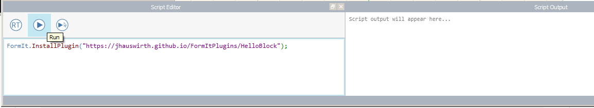

Examples
The following examples are all available as source code located here.
To install the Hello Block plugin:

Toolbar 1
To install the Toolbar 1 plugin:
FormIt.InstallPlugin("https://jhauswirth.github.io/FormItPlugins/Toolbar1");
Modal Dialog Box
The Modal Dialog Box is different. It is not installed, it is
just executed. So FormIt.LoadPlugin
is used instead:
FormIt.LoadPlugin("https://jhauswirth.github.io/FormItPlugins/ModalDialog");
Modeless Dialog Box
The Modeless Dialog Box is different. It is not installed, it
is just executed. So FormIt.LoadPlugin
is used instead:
FormIt.LoadPlugin("https://jhauswirth.github.io/FormItPlugins/ModalDialog");
Dialog From Toolbar
To install the Dialog From Toolbar plugin:
FormIt.InstallPlugin("https://jhauswirth.github.io/FormItPlugins/DialogFromToolbar");
Pop Edit Context
To install the Pop Edit Context plugin:
FormIt.InstallPlugin("https://jhauswirth.github.io/FormItPlugins/PopEditContext");
Messages
To install the Pop Edit Context plugin:
FormIt.InstallPlugin("https://jhauswirth.github.io/FormItPlugins/Messages");
Flip Along
To install the Flip Along plugin:
FormIt.InstallPlugin("https://jhauswirth.github.io/FormItPlugins/FlipAlong");